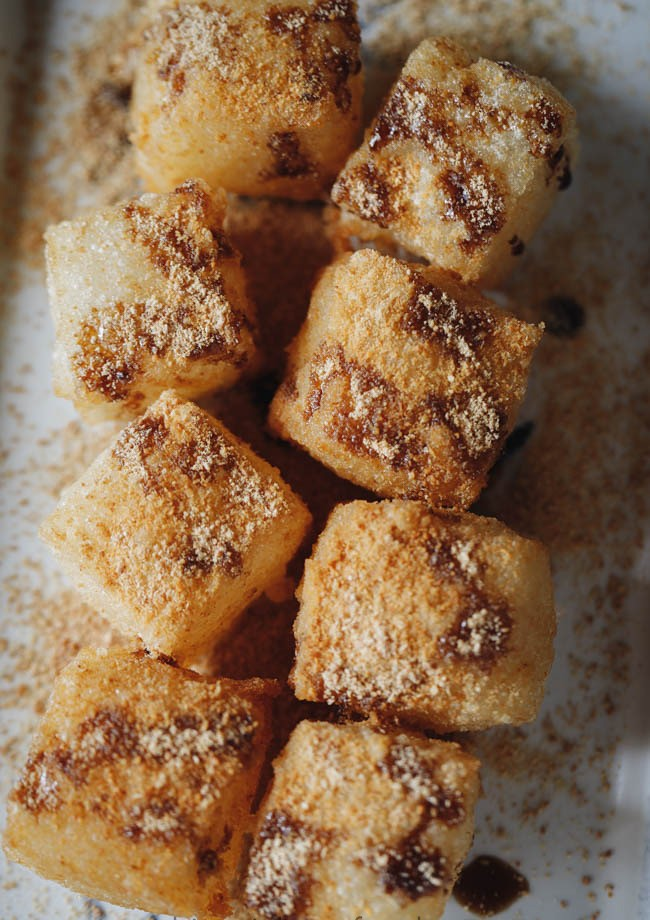

Brown Sugar Ciba (Sticky Rice Cake)

Description
Brown Sugar Ciba is a very classic Sichuan style dessert.
It's crispy shell is extremely aromatic with the help of soy bean flour and brown sugar syrup
Ingredients
- 2 cups short grain sticky rice, pre-soaked with water until softened
- oil for brushing and deep-frying
- toasted soy bean flour
- 100g brown sugar
- 70ml water
Recipe Instructions
- Soaking: Wash grain rice and then soak with cold water overnight. In very hot summer days, place in a cooler place or fridge.
- Steaming: Drain and then transfer the rice to a steamer. Steam over high fire for 30 minutes.
- Smashing: Transfer the rice to a large bowl and then smash the sticky rice with rolling pin or smasher. If feel the rice is too sticky and hard to smash, wet the pin slightly.
- Shaping: Transfer the smashed sticky rice to a lined rectangle container, lay another paper on top and flat well with any flat surface. Place in freezer for 2 hours.
- Oil Pre-Heating: Heat oil until very hot (around 190 degree C) firstly.
- Cutting: Take out and cut into strips firstly and further into squares (around 4 cm in diameter). I covered the cake with oil paper so no water attached. Watch carefully to see whether there is water attached, if yes, pat dry with kitchen paper.
- First-frying: Place one cube in the oil and fry for around 10 seconds until the surface is shaped and firmed. Then place the other one, wait for 10 seconds and place the second one. Pick the browned ones to strainer to cool down slightly.
- Second-frying: When all of the cubes are finished. Re-heat the oil to 210 degree C. Place the fried cubes in. Heat for around 10 seconds until they turns slightly golden brown. Transfer out immediately. Strain oil and place in serving plates.
- Serving: Drizzle brown sugar syrup and then sift soy bean flour.